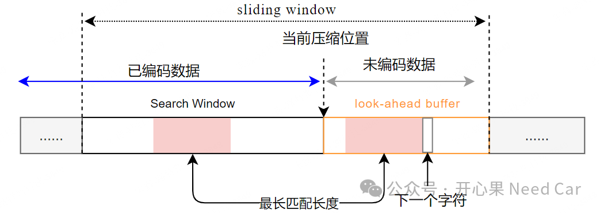
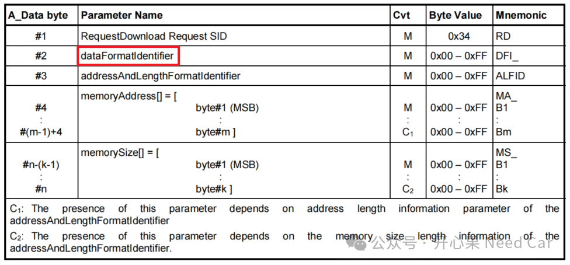
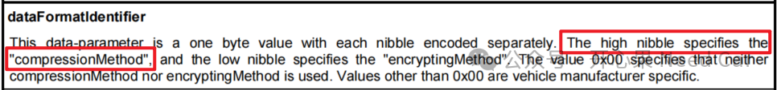
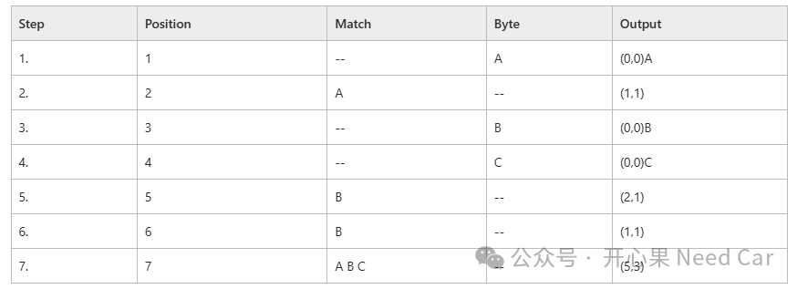

开心果 Need Car · 2024-11-19T06:32:00+08:00 · 微信原文
LZSS是一种字典（dictionary）编码技术，由LZ77衍生。这是一种无损数据压缩方法，LZSS尝试对搜索窗(search window）中相同字符串位置的引用来替换一串符号。
LZSS中的search window+look-ahead buffer构成一个滑动窗口（sliding window）。look-ahead buffer称为前置缓冲区，用于缓存一定大小（eg：17 bytes）的待编码数据；search window用于缓存固定大小（eg：1024 bytes）的已编码数据。压缩是通过用指向滑动窗口的位置信息/长度对替换在先前读取的数据中找到的字节数组来实现的，示意如下：

如果位置信息/长度对占用的比特数超过它试图压缩的字节数组，则数据将保持未压缩。这通过一个单比特标志进行指示，'1'表示后面的数据是未压缩的，'0'表示后面的数据是位置信息/长度对。为了加速压缩算法，使用二叉搜索树来存储先前压缩的数据。
（一）压缩算法的使用场景
提到压缩算法，最容易想到的工程场景当属UDS（Unified diagnostic services ）的Request Download Service（$34服务），$34服务格式如下：


| 34 10 44 A0 00 40 00 00 01 00 00 |
如上的蓝色“1”表示上位机接下来发送的数据是经过压缩处理的，这就意味着：随后的$36（Transfer Data Service）服务需要对接收的数据进行对应的解压处理。
除了提高数据传输效率以外，通过压缩数据，还可以有效减少数据存储空间，提高数据存储效率。
（二）LZ77基本原理
将编码位置设置为输入流的开始。
在窗口中查找与前置缓冲区的最长匹配。
如果找到匹配，输出指针P。将编码位置（和窗口）向前移动L字节。
如果未找到匹配，输出一个空指针和前置缓冲区中的第一个字节。将编码位置（和窗口）向前移动一个字节。
如果前置缓冲区不为空，返回到步骤2。
假设：待压缩的数据是AABCBBABC，压缩数据（output）过程如下所示：

更具体得描述参考资料(1)(2)。
如上已经提及，为了加速压缩，LZSS使用二叉搜索树来存储先前压缩的数据，这是查找最大匹配长度的精髓，本文不对二叉树展开讨论。
其中，在压缩算法中，会定义一个匿名结构体，eg：创建一个名为tree的数组，用于存储多个这样的结构体实例。假设：数组的大小为1025，示意如下：
#define INDEX_BIT_COUNT 10#define WINDOW_SIZE ( 1 << INDEX_BIT_COUNT )struct {int parent;int smaller_child;int larger_child;} tree[WINDOW_SIZE + 1];
结合二叉树算法，在理解字符串的查找过程，你会觉得这个操作有多“秀”。当然，并不是说LZSS就一定能达到数据压缩的目的，如果压缩的数据量小，压缩后的数据甚至会比压缩前的数据更大。
sliding window，1024 bytes
look-ahead buffer，（16+1 ）bytes
3、Python-LZSS算法链接
往期精彩回顾